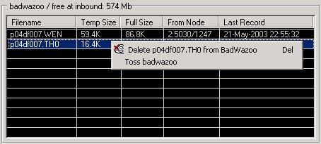

Эта панель появляется в окне линии почтовой системы, когда Радиус находится в режиме ожидания прозвонки или бездействия, т.е. когда не происходит сеанса связи. Панель BadWaZOO представляет собой удобный инструмент управления файлами и почтовыми пакетами, частично недопринятыми и помещенными во временный каталог Радиуса в результате неудачного завершения сеансов связи. При следующем сеансе связи с узлом-отправителем будет предпринята попытка допринять файл, т.е. продолжить его прием с места обрыва. Однако бывают случаи, когда это оказывается невозможным (при приеме почтовых архивов, в частности, причиной этому может служить их допаковка на узле-отправителе, при которой новый архив становится не идентичен исходному). В результате файл с тем же именем будет принят заново, а недопринятый файл останется во временном каталоге. Такая ситуация на плохих линиях происходит достаточно часто и является нормальной, поэтому в секции Main диалогового окна "Настройки" введен параметр Max BWZ Age, который определяет максимальный период, после которого недопринятые файлы будут автоматически удаляться.

Графически панель BadWaZOO - это таблица, в поля которой занесены: название файла, размер его принятой части, полный размер, узел-отправитель, а также дата и время, когда была предпринята последняя попытка допринять файл. В заголовке таблицы указан объем свободного дискового пространства в парольном каталоге.
Щелчок правой кнопкой мыши на элементе панели BadWaZOO вызывает появление контекстного меню, состоящего из следующих пунктов:
Список недопринятых файлов и пакетов хранится в файле (badwazoo.lst) в домашнем каталоге Радиуса.
См. также Каталоги.